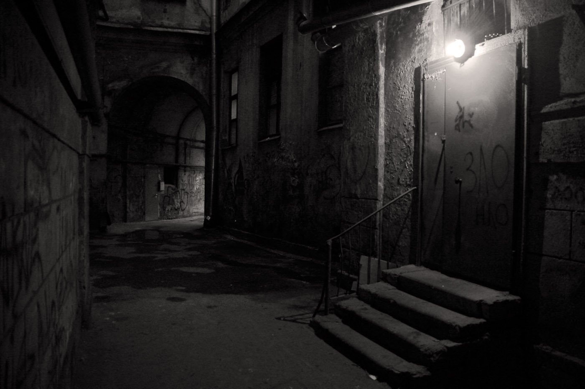

Выбор 2: Перейти на другую сторону улицы и обойти их.
Алексей решил не рисковать и аккуратно перешел на другую сторону улицы.
Он старался держаться подальше от мужчин, внимательно изучая окружающие его дома.
Его нервное напряжение начало спадать, и он почувствовал себя немного более уверенно.
Когда он обошел мужчин, он заметил, что впереди виднелся фонарь.
Узкий переулок
Алексей продолжил путь, но вскоре оказался в узком переулке, откуда доносились странные звуки.
Он мог:
Заглянуть в переулок, чтобы узнать, что происходит.
Обойти переулок и продолжить путь.
